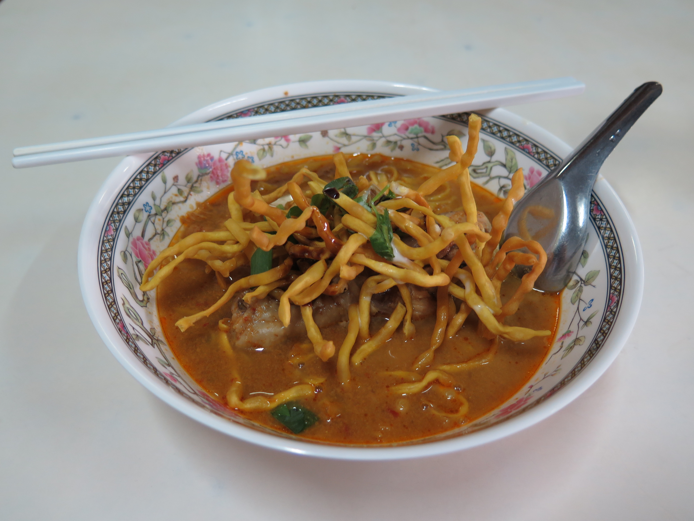

Khao Soi

Description
Regional Thai food isn't very well known, but khao soi ข้าวซอย, with egg noodles in an aromatic curry broth is an exception.
Because Northern Thailand is such a popular tourist destination, this Northern Thai curry noodle soup has become popular amongst foreigners.
Some might even say if you visit the North of Thailand and didn't eat khao soi, you didn't really make it there!
It's a truly unique dish, and with this recipe you can recreate the experience of Northern Thailand at home.
Khao means rice and soi means to julienne. It's an interesting name because there is no rice involved in the process.
Some say this is because the dish used to use rice noodles made by julienning sheets of dough. Others say khao is short for khao salee which means wheat.
Yet some think that the word came from a similar Burmese dish called ohn no khao swe, which I think is more likely because the two dishes are really quite similar.
Ingredients
Curry Paste
Dried Chilies
Coarse Salt
Ginger
Fresh Turmeric
Shallots
Coriander Seeds
Black Cardamom
Noodle Soup
Coconut Milk
Chicken Drumsticks
Soy Sauce
Fish Sauce
Palm Sugar
Wheat Based Egg Noodles
Chopped Cilantro Garnish
Steps
Khao Soi Curry Paste
Remove the seeds from the black cardamom pods and place the seeds into a medium dry skillet along with the coriander seeds.
Toast over medium high heat, moving them constantly, until the coriander seeds darken slightly. Set aside.
In the same skillet over high heat, place the ginger and turmeric slices down and let them sear until they're slightly charred.
Then flip and char the other side and remove from the pan.
In the same skillet, add the shallots and let them char; stirring them around to char them more evenly. Remove from the pan.
Cut the chilies into chunks and pour out most of the seeds.
In a coffee/spice grinder, grind the chilies, black cardamom and coriander seeds into a powder, remove and set aside.
In a heavy-duty mortar and pestle, pound the ginger and turmeric into a fine paste.
Add the shallots and the coarse salt and pound; and once it starts to get wet and slippery, add some of the ground spices to help absorb moisture and add friction.
Pound into a fine paste, then add any remaining dried spices and pound to mix.
Khao Soi Broth
Add ½ cup (120 ml) of the coconut milk and bring to a boil over medium heat. Add the curry paste and stir for a few minutes until the mixture is very thick and coconut oil starts to sizzle around the edges of the paste.
Add the remaining coconut milk and stir to dissolve the paste. Then add water, soy sauce, black soy sauce, and sugar.
Add the chicken drumsticks and bring to a simmer. Simmer gently for 40 minutes or until the drumsticks are fork tender.
Taste and adjust seasoning, adding more fish sauce if it needs a little more salt.
For crispy noodles: Cut the noodles for frying to about 4 inches, then fry them in a 350°F oil, pressing them down to keep them submerged. Once they are golden brown and the bubbling has almost completely stopped, remove from the oil and drain on a paper towel.
When ready to eat: Boil the noodles until they are fully cooked - timing will vary between brands and noodle sizes. Mine take 3 minutes. Drain and divide into serving bowls.